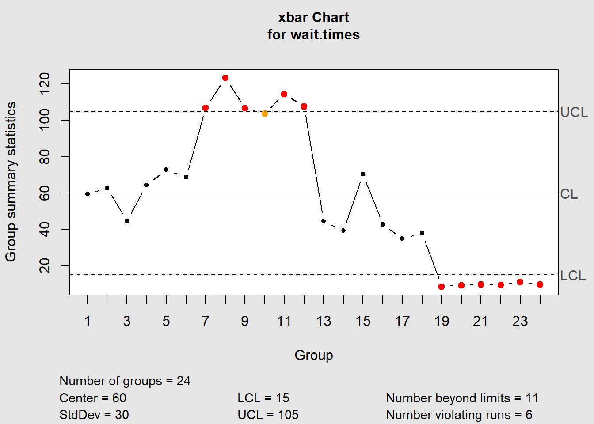

6 Chapter 7
Chapter7.xlsx 下載點
6.1 1.安裝、載入套件&讀檔
## 安裝套件
# install.packages(c("openxlsx", "qcc"))
## 載入套件
library(openxlsx)
library(qcc)
# 讀取檔案
file_path <- "D:/college information/R_statistics/Data Files/Chapter7.xlsx" # 更改成您要讀取之xlsx的路徑
sheet_name_1 <- "Lux_Hotel" #這裡輸入您要讀取的sheet的名稱
# 使用read.xlsx函數讀取指定的工作表
lux.hotel.df <- read.xlsx(file_path, sheet = sheet_name_1)
print(lux.hotel.df)## Shift Sample Wait.Time.(in.seconds) X4 X5 X6 Sample.Mean
## 1 <NA> 1 67 48 52 71 60
## 2 <NA> 2 57 68 60 66 63
## 3 Shift 1: 3 37 41 60 41 45
## 4 12:00 am-6:00 am 4 83 59 49 66 64
## 5 <NA> 5 82 63 64 83 73
## 6 <NA> 6 87 53 66 69 69
## 7 <NA> 7 98 100 122 108 107
## 8 <NA> 8 125 121 120 128 124
## 9 Shift 2: 9 116 104 96 111 107
## 10 6:00 am-12:00 pm 10 100 123 102 90 104
## 11 <NA> 11 123 94 128 113 114
## 12 <NA> 12 107 105 113 106 108
## 13 <NA> 13 59 41 37 41 44
## 14 <NA> 14 27 42 39 49 39
## 15 Shift 3: 15 72 81 62 67 71
## 16 12:00 pm-6:00 pm 16 50 46 30 45 43
## 17 <NA> 17 17 46 53 24 35
## 18 <NA> 18 34 37 34 47 38
## 19 <NA> 19 6 11 8 9 9
## 20 <NA> 20 10 8 10 9 9
## 21 Shift 4: 21 11 7 14 7 10
## 22 6:00 pm-12:00 am 22 8 9 9 12 10
## 23 <NA> 23 9 12 9 14 11
## 24 <NA> 24 5 8 15 11 106.2 2.生成隨機樣本
（重現範例7.1）
6.2.1 使用抽樣
6.2.1.1 A. 使用 sample() 函數
## [1] 4964 11591 18469 4524 2754 10138 273 9593 2490 7330 1111 15734
## [13] 11224 18513 16186 18402 5578 15834 2642 9288 2974 13324 7575 16268
## [25] 2055 3635 15793 3175 567 18889 18452 3659 15823 1414 11524 19723
## [37] 14109 14261 9325 15402 516 4591 19536 9000 6145 17249 5750 11938
## [49] 10132 12996 15163 16117 14282 9528 16768 11962 16122 2717 1730 12204
## [61] 15194 16843 14226 19879 3093 6435 411 5653 632 15567 19142 15217
## [73] 9907 12544 12247 4794 16526 2727 14575 2133 2134 13250 4725 1743
## [85] 625 3686 19087 8083 16042 4224 7310 11017 13681 1961 8457 11346
## [97] 7112 6800 8625 11276.2.1.2 B. 使用 sample.int() 函數
## [1] 6295 6883 19094 16233 10171 16912 16518 327 19952 2028 10825 1714
## [13] 11629 3350 3745 510 11120 8368 1462 12814 17221 6316 17203 11304
## [25] 70 13044 17017 491 5381 14904 9117 16075 2409 9369 5098 1966
## [37] 3870 17564 7545 17825 17261 7571 7153 2425 17631 12454 15892 19853
## [49] 5001 13959 6884 11401 5045 13678 4966 6263 2364 17321 16482 5649
## [61] 1542 16678 1366 1605 4680 5509 1391 7317 2107 15139 17805 13010
## [73] 8767 8013 9135 17492 11312 310 13747 9534 11847 19085 4236 12479
## [85] 11784 12580 6970 14806 12390 1357 14560 15783 19470 6505 11504 8648
## [97] 4760 4118 10851 43226.2.2 從分布中生成樣本
6.2.2.1 A. 使用 runif() 函數從均勻分布中生成樣本
## [1] 18521.9928 14854.9809 15836.7174 2581.3183 897.7671 6251.2565
## [7] 10543.2405 14219.5116 1270.6551 19815.6861 8660.8306 8196.8923
## [13] 18020.8527 13936.1173 9239.1825 6628.2655 10715.1782 6076.0010
## [19] 2905.4414 17086.3291 2009.0734 19699.6090 8034.7158 16793.2930
## [25] 9599.1641 14283.6626 5881.9423 15879.6793 9968.2335 4216.6699
## [31] 4787.7632 7973.1224 2758.4899 13851.5943 1580.3996 1498.2190
## [37] 15514.5795 1193.8012 14758.8060 4117.9974 14875.4077 1052.0182
## [43] 19772.4142 10038.2630 3135.2627 2580.0385 11063.5359 11638.9770
## [49] 11795.2982 2402.0557 17190.4323 16913.6456 9647.1423 18125.5675
## [55] 14522.4087 19131.1577 11831.0021 18838.3198 3776.4495 526.1744
## [61] 12649.9719 5670.9106 18793.2762 12195.2416 5251.6209 13024.2108
## [67] 3376.1797 6269.5820 9381.0400 19563.8000 5175.1802 17708.5367
## [73] 3250.9530 13276.5982 16769.7553 6418.4207 1641.4950 11209.1051
## [79] 12282.0786 16523.7454 8180.5125 13780.3660 13345.7345 12991.4726
## [85] 2640.4907 15464.9249 10662.8511 1741.2203 12087.3370 11433.0059
## [91] 5102.9203 2096.4464 19544.5964 19850.7486 16423.4874 15111.8668
## [97] 16079.3911 13832.9578 3356.2309 7808.78276.2.2.2 B. 將生成的值四捨五入到整數，獲得隨機整數樣本
## [1] 18522 14855 15837 2581 898 6251 10543 14220 1271 19816 8661 8197
## [13] 18021 13936 9239 6628 10715 6076 2905 17086 2009 19700 8035 16793
## [25] 9599 14284 5882 15880 9968 4217 4788 7973 2758 13852 1580 1498
## [37] 15515 1194 14759 4118 14875 1052 19772 10038 3135 2580 11064 11639
## [49] 11795 2402 17190 16914 9647 18126 14522 19131 11831 18838 3776 526
## [61] 12650 5671 18793 12195 5252 13024 3376 6270 9381 19564 5175 17709
## [73] 3251 13277 16770 6418 1641 11209 12282 16524 8181 13780 13346 12991
## [85] 2640 15465 10663 1741 12087 11433 5103 2096 19545 19851 16423 15112
## [97] 16079 13833 3356 78096.3 3.構建 x̄ 圖
6.3.1 A. 從 lux.hotel.df 數據文件中提取等待時間的列
## Wait.Time.(in.seconds) X4 X5 X6
## 1 67 48 52 71
## 2 57 68 60 66
## 3 37 41 60 41
## 4 83 59 49 66
## 5 82 63 64 83
## 6 87 53 66 696.3.2 B. 使用 qcc 函數創建 x̄ 圖

## List of 11
## $ call : language qcc(data = wait.times, type = "xbar", center = 60, std.dev = 30, nsigmas = 3)
## $ type : chr "xbar"
## $ data.name : chr "wait.times"
## $ data : num [1:24, 1:4] 67 57 37 83 82 87 98 125 116 100 ...
## ..- attr(*, "dimnames")=List of 2
## $ statistics: Named num [1:24] 59.5 62.8 44.8 64.2 73 ...
## ..- attr(*, "names")= chr [1:24] "1" "2" "3" "4" ...
## $ sizes : Named int [1:24] 4 4 4 4 4 4 4 4 4 4 ...
## ..- attr(*, "names")= chr [1:24] "1" "2" "3" "4" ...
## $ center : num 60
## $ std.dev : num 30
## $ nsigmas : num 3
## $ limits : num [1, 1:2] 15 105
## ..- attr(*, "dimnames")=List of 2
## $ violations:List of 2
## - attr(*, "class")= chr "qcc"